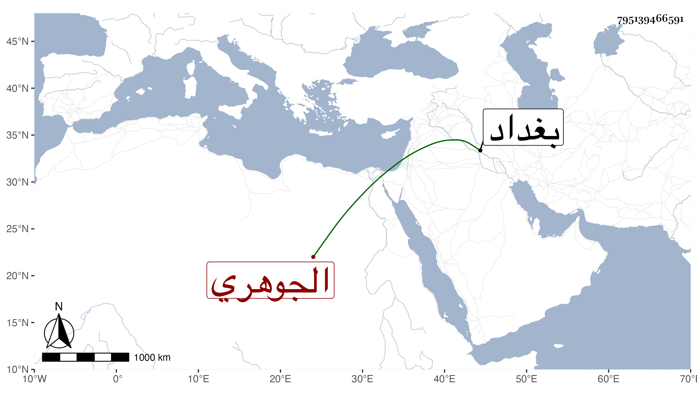

0902Sakhawi.DawLamic.ITO20230111-ara1.EIS1600.795139466591
Biography ID: 795139466591
527
محيي الدين بن نور الدين علي الجوهري ويعرف بابن الفاوي أخو أبي بكر الماضي لأبيه مات في ليلة الجمعة خامس عشرى ربيع الأول سنة احدى وتسعين وابن النحاس صاحب مصنف الجهاد هو أحمد بن إبراهيم بن محمد وترجمه شيخنا في حوادث سنة أربع عشرة من أنبائه والتبريزي شيخ العلاء بن العفيف فقرأ عليه أو سمع صحيح البخاري وذكر لي أنه ممن أخذ عنه الزين الخافي وأنه كان معمرا يروي عن شيوخ بغداد .
